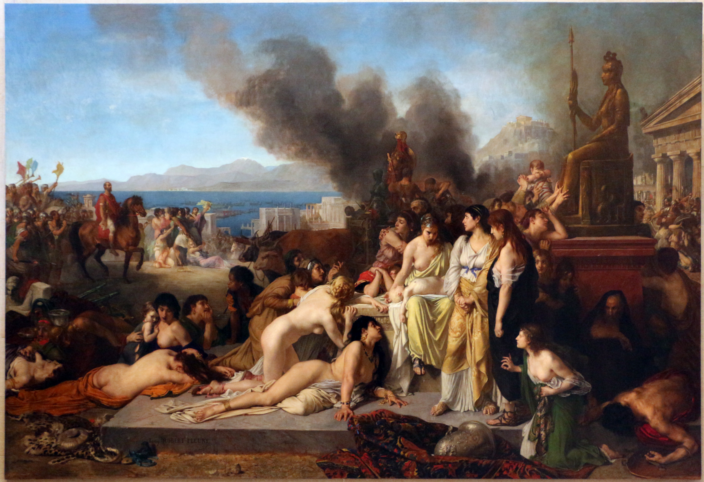

The Corinthian War (c. 395 - 386 BCE)

The Corinthian War was a conflict between Sparta and a group of Greek city-states that included Athens, Thebes, Corinth, and Argos. After Sparta won the Peloponnesian War, it became the dominant power in Greece. However, many city-states were unhappy with Spartan control and believed that Sparta was using its victory to increase its own power. With financial support from the Persian Empire, these cities formed an alliance in 395 BCE to challenge Spartan dominance. The war was named after Corinth, where the allies held their meetings.
During the early years of the war, Sparta won several battles on land, including those near Nemea and Coroneia. However, its position became weaker after the Persian-supported fleet defeated the Spartan navy at the Battle of Cnidus in 394 BCE. This victory prevented Sparta from establishing itself as a major naval power. Athens took advantage of the situation by rebuilding its fleet and regaining control over several islands that had previously belonged to its maritime alliance.
As Athens and its allies began to gain strength, Persia changed its position and started supporting Sparta instead. Without Persian backing, the anti-Spartan alliance faced increasing pressure to negotiate peace. In 387 BCE, the conflict ended with the King's Peace, also known as the Peace of Antalcidas, which was imposed by the Persian king Artaxerxes II.
The treaty gave Persia control over the Greek cities of Ionia in Asia Minor and declared that the other Greek city-states should remain independent. In practice, this prevented them from forming powerful alliances that could challenge Sparta. Sparta was given the responsibility of enforcing the agreement, allowing it to maintain its leading position in Greece. Thebes suffered particularly badly because its regional alliance was broken up and Spartan troops were stationed in some of its cities.
Although the Corinthian War ended with a peace agreement, it did not bring lasting stability to Greece. Rivalries continued, especially between Sparta and Thebes. Their renewed conflict eventually led to the Battle of Leuctra in 371 BCE, where Thebes defeated Sparta and brought an end to Spartan dominance. The Corinthian War demonstrated how struggles for power and foreign intervention continued to divide the Greek city-states even after the Peloponnesian War.